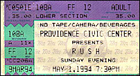

|
May 1, 1994 Civic Center. Providence, RI

The Providence Journal Bulletin
Rush Has Everything -- Except Charisma Canadian progressive rock trio Rush brought a lot to the concert stage at the civic center last night. There was the band's fearsome musical technique, Geddy Lee's trademark wail, and as much high technology you'll find this side of a Pink Floyd show -- big screen imagery, flames, giant sparklers, fireworks, quad sound, giant inflatable rabbits, state-of-the-art lighting. And it was presented with considerable intelligence. On the down side, Rush didn't have a lot of charisma, even if Lee did try a few tentative leaps, a la Pete Townshend, and the music itself has its ponderous side. Occasionally, bassist Lee would come to the edge of the stage, or he and guitarist Alex Lifeson would interact, but mostly you had the sense of three guys who were very busy with their own musical tasks. Great live bands need someone who can communicate passion, and that's missing in Rush. Never a critics' favorite, the band has a loyal core of fans who were immensely satisfied by a show that lasted more than two hours. The band opened with "Dreamline," off their Roll the Bones album, then elicited cheers with an old favorite, "Spirit of Radio." "Cold Fire," with lyrics in the form of a conversation between two lovers, was the first of a half-dozen songs from the band's new album, Counterparts. By now it was time for some video on the huge screens behind the stage, like the hypnotic swinging watch on the effective "Time Stand Still." For the catchy "Roll the Bones," the screens filled with gambling imagery and dancing skeletons that looked like something from a Grateful Dead video. Lighters flickered all over the arena as Lifeson strummed an acoustic guitar to start a Rush favorite, "Closer to the Heart," which then built on Lee's bass part toa tough, satisfying finish. Drummer Neil Peart got his big solo during the instrumental "Leave That Thing Alone," making use of his huge drum kit and an array of electronic samples. That made things more interesting than most drum solos. During "Show Don't Tell," a giant inflatable rabbit grew on one side of the stage, with an equally large hunter on the other. The hunter "shot" the rabbit, who died and was escorted to bunny heaven by cartoon angels. Cute. "Xanadu" was a long, meandering epic from Rush's sci-fi days, with lots of moody lighting and smoke billowing out onto the stage, that made longtime Rush fans happy. So did another old favorite, "Tom Sawyer," which was punctuated with enough flames and explosions for a small war. After all that, the encore "Force 10" seemed anticlimactic.
|